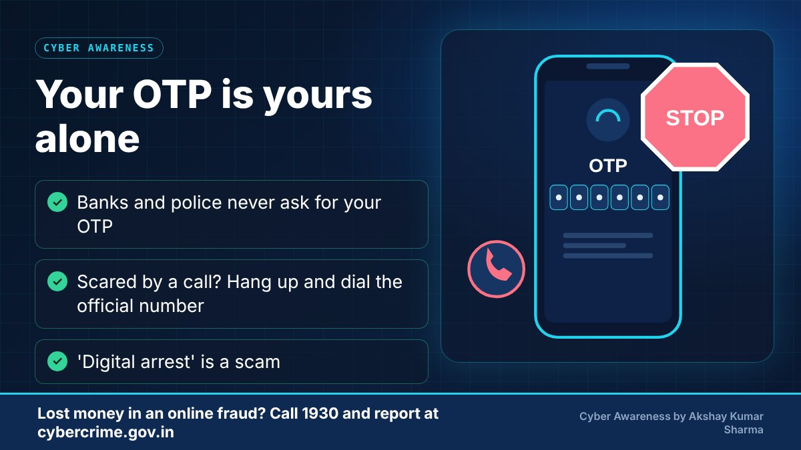
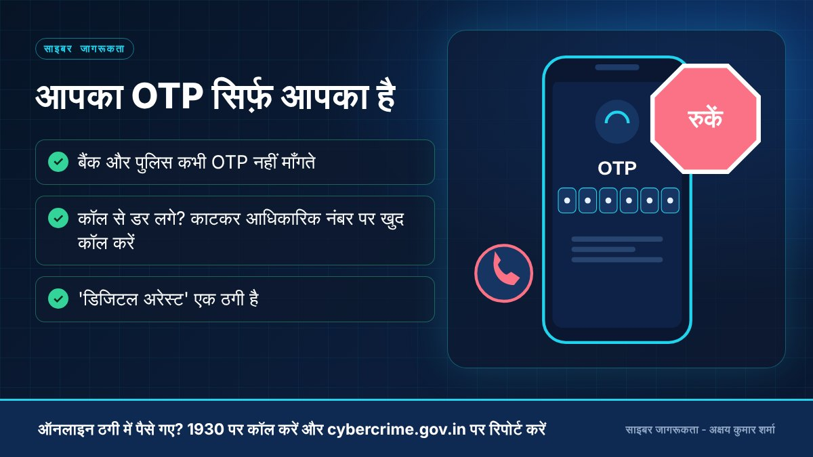

Download this guide with its diagrams as a PDF.इस गाइड को चित्रों सहित PDF में डाउनलोड करें।
What it isयह क्या है
Social engineering means manipulating a person into giving up information or taking an action, using trust, fear, urgency or greed. An OTP (one-time password) exists to prove that you are the one approving something. If you read it out to a caller, you are approving what the attacker is doing. This includes 'digital arrest' calls, where scammers pose as police or investigation agencies on a call or video call. Authorities have clearly advised that genuine agencies do not arrest people over a video call or demand money to 'settle' a case.
सोशल इंजीनियरिंग में भरोसे, डर, जल्दबाज़ी या लालच का इस्तेमाल करके किसी व्यक्ति से जानकारी निकलवाई जाती है या कोई काम करवाया जाता है। OTP इसलिए होता है कि आप साबित कर सकें कि मंज़ूरी आप दे रहे हैं। यदि आप OTP किसी कॉल करने वाले को बता देते हैं, तो आप ठग की कार्रवाई को मंज़ूरी दे देते हैं। इसमें 'डिजिटल अरेस्ट' जैसी कॉल भी आती हैं, जिनमें ठग पुलिस या जाँच एजेंसी बनकर कॉल या वीडियो कॉल करते हैं। अधिकारियों ने साफ़ सलाह दी है कि असली एजेंसियाँ वीडियो कॉल पर गिरफ़्तारी नहीं करतीं और न ही मामला निपटाने के लिए पैसे माँगती हैं।
-
A caller pretends to be your bank, police or a courierकॉल करने वाला बैंक, पुलिस या कूरियर का बनकर बात करता हैStop hereयहीं रोकें: Hang up. Call the official number yourself.कॉल काट दें। आधिकारिक नंबर पर खुद कॉल करें।
-
Creates fear or urgency: 'account blocked', 'arrest'डर या जल्दबाज़ी बनाता है: 'खाता बंद', 'गिरफ़्तारी'Stop hereयहीं रोकें: Urgency is the trap. Pause and talk to someone you trust.जल्दबाज़ी ही जाल है। रुकें और भरोसेमंद व्यक्ति से बात करें।
-
Builds trust with real-sounding detailsअसली लगने वाली जानकारी से भरोसा जीतता है
-
Asks for your OTP, PIN or to install an appOTP, PIN माँगता है या ऐप इंस्टॉल करवाता हैStop hereयहीं रोकें: Never share an OTP. No genuine bank or police asks for it.OTP कभी साझा न करें। असली बैंक या पुलिस इसे नहीं माँगते।
-
Your account is taken over or money is movedआपका खाता कब्ज़े में या पैसा ट्रांसफ़र हो जाता है

Download this poster

पोस्टर डाउनलोड करें
Common warning signsआम चेतावनी के संकेत
- A caller claims to be from a bank, police, customs, courier or a government agency and asks for an OTP, PIN or money.
- You are told not to disconnect, not to tell family, or to stay on a video call.
- Threats such as arrest, account freezing or legal action unless you pay or 'verify' immediately.
- A parcel or SIM 'linked to a crime' story that you cannot check independently.
- Requests to move money to a 'safe account'.
- बैंक, पुलिस, कस्टम, कूरियर या सरकारी एजेंसी का बताकर कोई OTP, PIN या पैसे माँगे।
- कहा जाए कि कॉल न काटें, परिवार को न बताएँ या वीडियो कॉल पर बने रहें।
- गिरफ़्तारी, खाता फ़्रीज़ या कानूनी कार्रवाई की धमकी, जब तक आप तुरंत भुगतान या 'वेरिफ़ाई' न करें।
- किसी पार्सल या SIM के 'अपराध से जुड़े' होने की कहानी जिसे आप स्वतंत्र रूप से जाँच नहीं सकते।
- पैसे 'सुरक्षित खाते' में डालने को कहना।
Practical prevention tipsबचाव के व्यावहारिक सुझाव
- Never share an OTP with anyone. A genuine organisation will not ask for it.
- Hang up. Then call the organisation yourself using its official number.
- Do not be rushed. Talk to a family member or friend before acting on any threat.
- Remember: no genuine agency arrests people over video calls or asks for money to close a case.
- Limit what you share publicly - scammers use personal details to sound convincing.
- OTP किसी को भी न बताएँ। असली संस्था इसे कभी नहीं माँगती।
- कॉल काट दें। फिर संस्था के आधिकारिक नंबर पर खुद कॉल करें।
- जल्दबाज़ी में न आएँ। किसी धमकी पर कार्रवाई से पहले परिवार या मित्र से बात करें।
- याद रखें: कोई असली एजेंसी वीडियो कॉल पर गिरफ़्तारी नहीं करती और केस बंद करने के लिए पैसे नहीं माँगती।
- सार्वजनिक रूप से अपनी निजी जानकारी कम से कम साझा करें - ठग इसी से अपनी बात विश्वसनीय बनाते हैं।
-
Share the OTP to 'verify' your accountखाता 'वेरिफ़ाई' करने के लिए OTP बतानाKeep the OTP private. Only you type it, in the official appOTP गोपनीय रखें। इसे सिर्फ़ आप आधिकारिक ऐप में डालें
-
Stay on the line because you are scaredडर के कारण कॉल पर बने रहनाHang up and call the official number yourselfकॉल काटकर आधिकारिक नंबर पर खुद कॉल करना
-
Believe a 'digital arrest' video call'डिजिटल अरेस्ट' वाली वीडियो कॉल पर यकीन करनाKnow that this is a scam. Call 1930 and report itसमझें कि यह ठगी है। 1930 पर कॉल करके रिपोर्ट करें
-
Install an app sent on WhatsApp or SMSWhatsApp या SMS पर आया ऐप इंस्टॉल करनाInstall apps only from the official app storeऐप सिर्फ़ आधिकारिक ऐप स्टोर से इंस्टॉल करना
What to do if it happensऐसा हो जाए तो क्या करें
- Disconnect the call and stop all payments immediately.
- Report suspected fraudulent calls or messages on Sanchar Saathi (Chakshu).
- Call the cyber crime helpline 1930 immediately - reporting quickly gives the best chance of stopping the transfer.
- Also file a complaint on the National Cyber Crime Reporting Portal (cybercrime.gov.in).
- Inform your bank or payment app right away and ask them to block the card, account or UPI ID involved.
- Keep screenshots, transaction IDs, phone numbers, UPI IDs and chat history. Do not delete anything.
- Change passwords of affected accounts and do not share OTPs or PINs with anyone who calls you afterwards offering to 'recover' your money.
- कॉल तुरंत काट दें और सभी भुगतान रोक दें।
- संदिग्ध धोखाधड़ी वाली कॉल या संदेश की रिपोर्ट संचार साथी (चक्षु) पर करें।
- तुरंत साइबर अपराध हेल्पलाइन 1930 पर कॉल करें - जल्दी रिपोर्ट करने से पैसा रोके जाने की संभावना बेहतर होती है।
- राष्ट्रीय साइबर अपराध रिपोर्टिंग पोर्टल (cybercrime.gov.in) पर भी शिकायत दर्ज करें।
- अपने बैंक या पेमेंट ऐप को तुरंत सूचित करें और संबंधित कार्ड, खाता या UPI ID ब्लॉक करवाएँ।
- स्क्रीनशॉट, ट्रांज़ैक्शन ID, फ़ोन नंबर, UPI ID और चैट सुरक्षित रखें। कुछ भी डिलीट न करें।
- प्रभावित खातों के पासवर्ड बदलें, और बाद में पैसे 'वापस दिलाने' का दावा करने वाले किसी भी व्यक्ति को OTP या PIN न दें।
Official reporting resourcesआधिकारिक रिपोर्टिंग संसाधन
- Cyber crime helpline 1930 (for financial cyber fraud)साइबर अपराध हेल्पलाइन 1930 (वित्तीय साइबर ठगी के लिए)
- National Cyber Crime Reporting Portal (cybercrime.gov.in)राष्ट्रीय साइबर अपराध रिपोर्टिंग पोर्टल (cybercrime.gov.in) (opens in a new tab)
- Sanchar Saathi - report suspected fraud calls/messages (Chakshu)संचार साथी - संदिग्ध धोखाधड़ी कॉल/संदेश की रिपोर्ट (चक्षु) (opens in a new tab)
- Reserve Bank of India - public awarenessभारतीय रिज़र्व बैंक - जन जागरूकता (opens in a new tab)
Related educational articlesसंबंधित शैक्षिक लेख
UPI and Payment Fraud AwarenessUPI और पेमेंट धोखाधड़ी जागरूकता
Read guideगाइड पढ़ेंAI-Based ScamsAI आधारित ठगी
Read guideगाइड पढ़ेंPhishing and Fake Websitesफ़िशिंग और नकली वेबसाइट
Read guideगाइड पढ़ेंThis website is an educational resource. It is not an official government reporting portal or an emergency response service. If you are a victim of cyber fraud, report it through the official channels listed on each page.यह वेबसाइट केवल शैक्षिक जानकारी के लिए है। यह कोई सरकारी रिपोर्टिंग पोर्टल या आपातकालीन सेवा नहीं है। यदि आप साइबर ठगी का शिकार हुए हैं, तो हर पेज पर दिए गए आधिकारिक माध्यमों से रिपोर्ट करें।